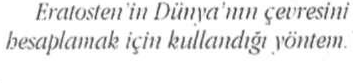
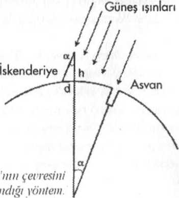

9. Güneş ışınları Asvan üzerine dik düştüğünde, İskenderiye üstüne değişik bir açıyla gelmektedir. Bu açıya a dedi. Ve bu açıyı 7, 2° buldu. Bunu dairenin toplanı açı değeri olan 360° "c böldüğünde Asvan ve İskenderiye arasındaki mesafenin dünyanın çevresine olan oranını buldu. 360 ". 2=50.
Antik çağda ölçü birimi olarak kullanılan stad'ın sabit bir değeri yoktu. Hemen her kentte farklı ölçülerde kullanılıyordu. En çok kullanılan "Olimpos Stadı" 157,5 metreye eşittir. Eratosten dünyanın çevresini 250.000 stad olarak hesaplamıştır. Bu da yaklaşık olarak 39 375 km'ye eşittir. Bu günümüzde hesaplanan gerçek uzunluktan % 1 kadar bir sapma demektir. Hesabın doğru olabilmesi için Asvan ve İskenderiye'nin aynı meridyen üzerinde bulunması gerekir. Eratosten yaptığı işlemde Rodos, İskenderiye ve Asvan'dan geçen meridyeni kullanmıştır. Ancak kullandığı haritalarda Nif'in doğu yönünde bir sapma göstereceğini bilemezdi. Bu % 1'lik fark burdan gelmektedir. Yine de bu hata, Eratosten'in elde ettiği sonuç açısından göz ardı edilebilir bir niteliktedir.
Bu tablolar, bugün kullandığımız, sinüs ve kosinüsleri veren trigonometrik tablonun arasıdır.
Gündönümlerinin değişmesi 2000 yıl sonra Newton tarafından açıklandı. Ay ve Güneş'in dünya üstündeki çekim kuvvetleri yüzünden, dünyanın yörünge ekseni aynı kalmaz. 26.000 yıla yakın bir sürede bir koni çizer. Bu yılda 50,3 saniyelik bir sapmaya eşdeğerdir. (360°, her derece kendi içinde 60 dakikaya, her dakika 60 saniyeye ayrılır) Hipparoos bu değeri yılda 46 saniye olarak ölçtü.
13. Batlamyus'un Matematiksel Düzen 19. yüzyılda Tabit Bin Kurra tarafından
Arapça'ya çevrildi ve o günden sonra ila Almagest (en büyük) adıyla bilindi.
14. Antik çağdaki en ünlü müzik araştırması Nicomacus'a aittir. Sesleri 7 kategoriye
ayırmıştır. Bu kategoriler yıldızları yönlendiren uyumu belirlerler. Birinci kategori
yedi temel notadan oluşur.